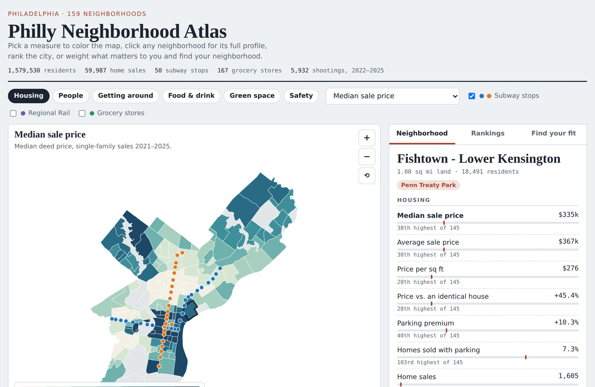
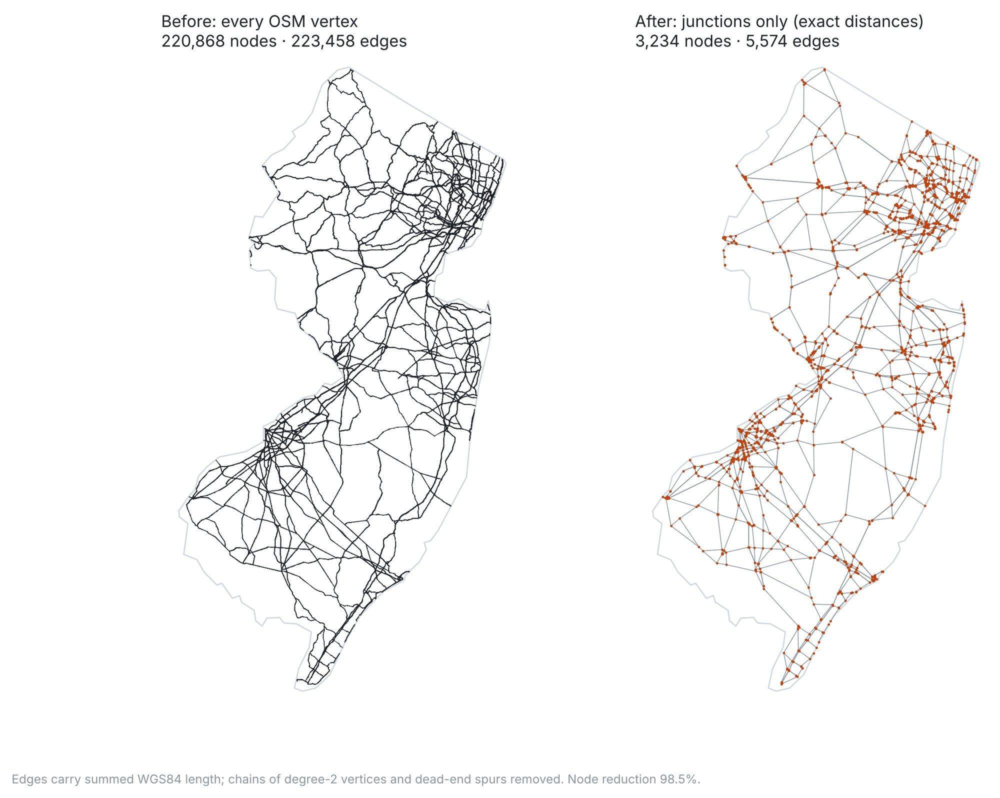

Projects

An interactive map of Philadelphia's 159 neighborhoods. Click a neighborhood to see its home prices, a hedonic estimate of what a parking spot adds to a home's value, Census demographics, park coverage, subway access, grocery stores and restaurants per capita, and shootings, each with its citywide rank. Visitors can also rank neighborhoods by any measure or weight the measures to find their best fit. Built from city property and deed records, the American Community Survey, crime data from the Philadelphia City Controller, and OpenStreetMap.

Arteries computes the cheapest road-and-sea route between every pair of the world’s 2,075 cities with more than 100,000 people, letting users price road kilometers, sea kilometers, and port calls as they choose, and close chokepoints such as the Suez Canal or the Bab el-Mandeb. Building it meant pulling road networks for 236 countries from the OpenStreetMap Overpass API and fusing them with global shipping lanes, 1,804 IMF PortWatch ports, and UN city data. A parallelized pipeline on the Picotte high-performance computing cluster then strips the road network down to its junctions, removing about 99 percent of nodes without changing a single shortest path. The result is exact, matching Dijkstra’s algorithm on the full global graph, yet it routes all 4.3 million city pairs in about 20 seconds on a laptop.